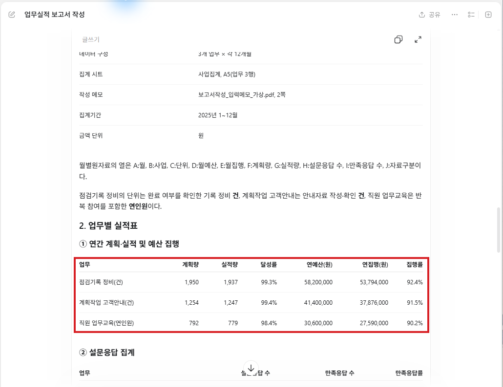
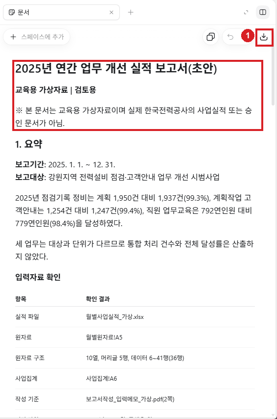
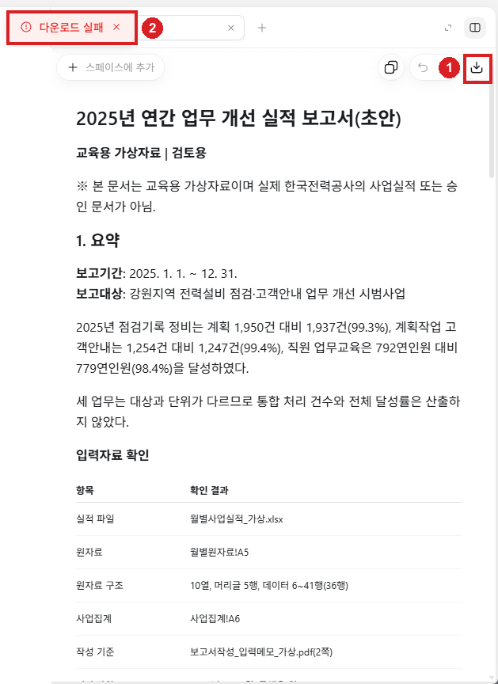
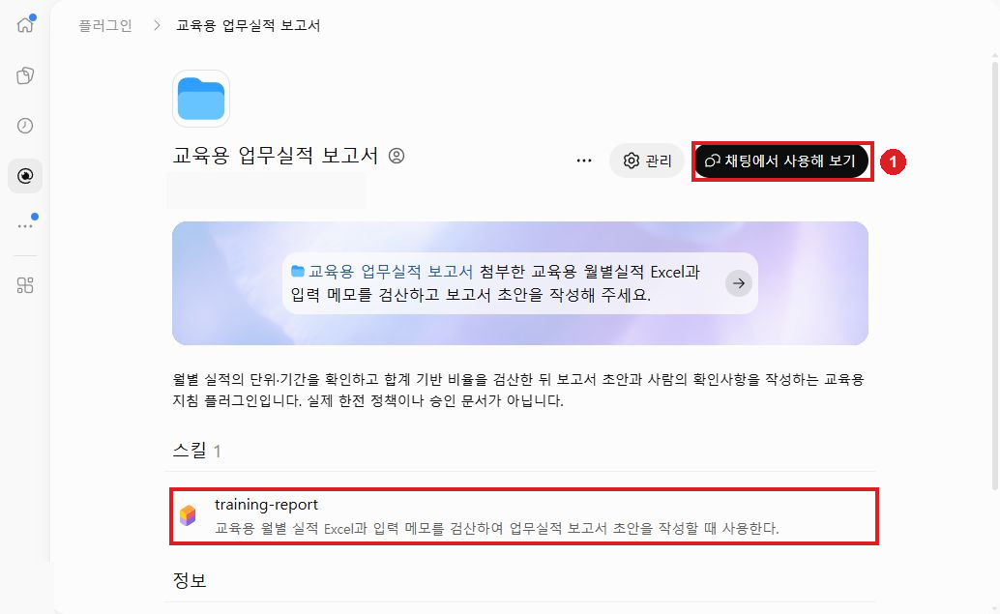
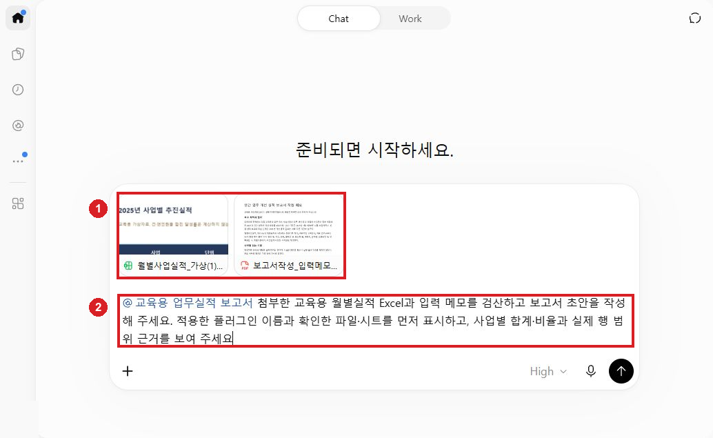
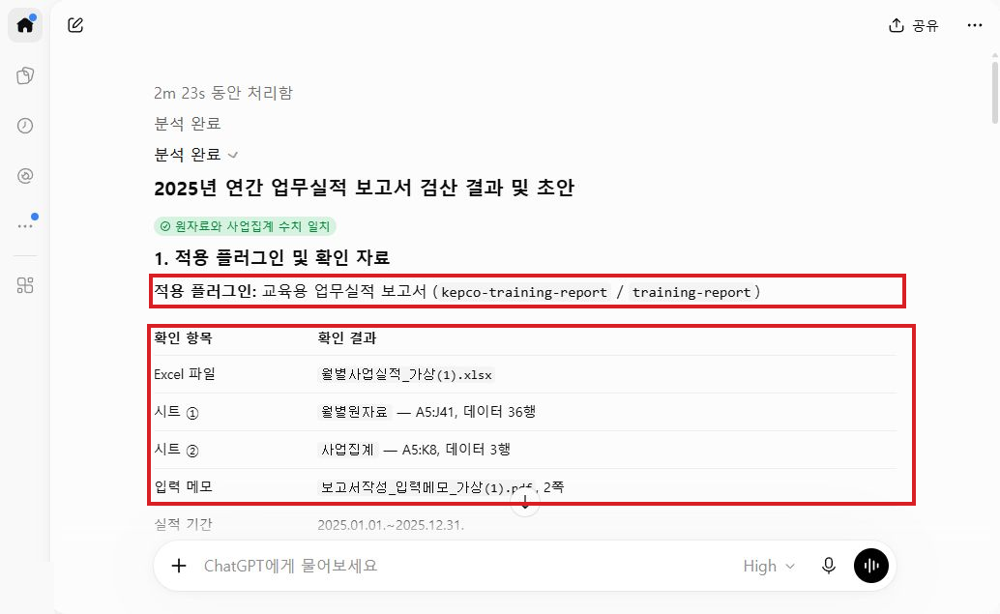
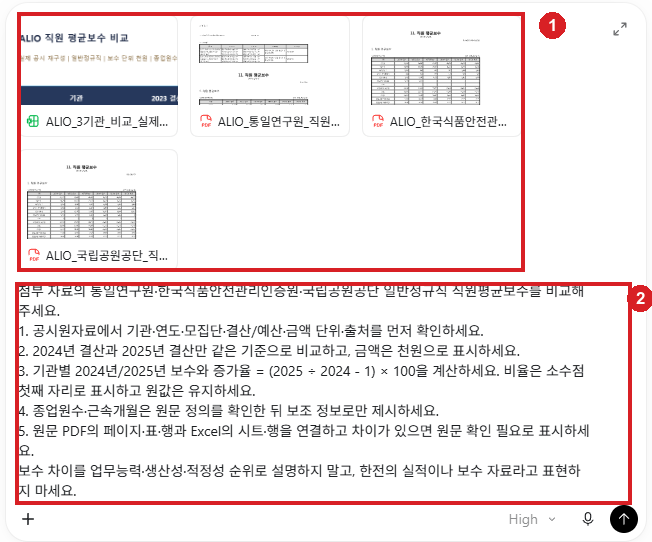
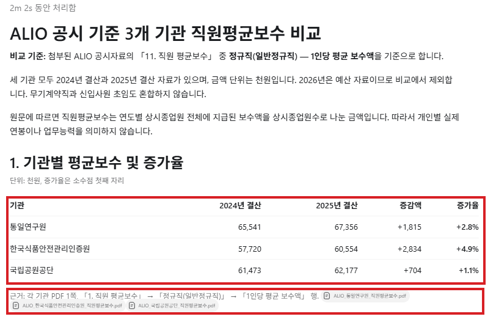
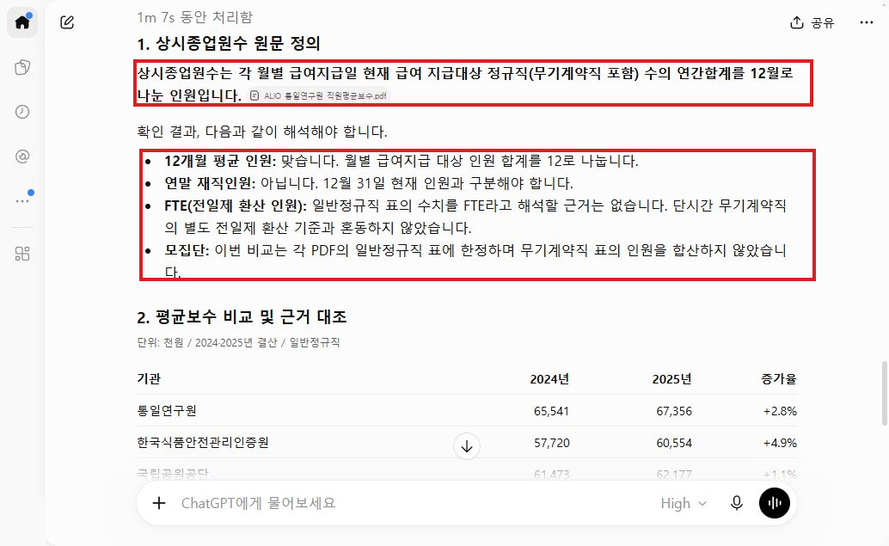

2. ChatGPT 업무 활용
90분. 실적 보고서 작성 → 보고서 작성 절차 재사용 → ALIO 기관 비교 순서로 진행합니다.
| 시간 | 실습 | 만들 결과 |
|---|---|---|
| 0~40분 | CG01 보고서 작성·편집 | 검산한 보고서 |
| 40~65분 | CG02 플러그인 재사용 | 새 대화에서도 같은 기준으로 작성한 초안 |
| 65~90분 | CG03 ALIO 비교 | 같은 기준의 비교표 |
파일 선택: 문서의 Word·PDF·HWPX는 같은 내용이므로 사용할 형식 하나만 고릅니다. 아래 실습의 AI 첨부에는 PDF를 권장하며, Excel은 그대로 사용합니다. 캡처는 실제 실습 화면입니다.
ChatGPT 앱에서 ChatGPT를 선택합니다. Chat은 대화, Work는 파일 작업에 쓰며, 계정에 보이는 메뉴를 사용합니다. 공식 시작 안내
CG01. 연간 실적 보고서 작성과 편집
목표: 2025년 실적을 계산해 A4 2쪽 안팎의 보고서 초안을 만들고 수정합니다.
지금 준비할 파일
첨부 2개: Excel 1개 + 입력 메모 PDF 1개입니다.
| 파일 | 쓰는 이유 |
|---|---|
| 월별 실적 Excel | 2025년 계획·실적·예산·설문을 계산 |
| 보고서 작성 메모 PDF | 보고서 목적과 확인할 사항 확인 |
바로 할 일
- 새 대화를 엽니다.
- 입력창의 파일 추가에서 위 두 파일을 한 번씩 첨부합니다.
- 파일명이 2개 보이고 업로드가 끝났는지 확인합니다.
- 아래 요청문을 복사해 전송합니다.
- 답변의 파일·시트·기간·단위를 확인합니다.
요청문 원본: CG01
2025년 1~12월 업무실적 보고서 초안을 작성해 주세요.
1. 먼저 파일·시트·열·행 수·기간·단위를 확인해 주세요.
2. 월별원자료에서 업무별 연간 계획량·실적량·예산·집행액·설문응답·만족응답 합계를 계산해 주세요.
달성률·집행률·만족응답률은 각각 합계의 비율로 계산하고 소수점 첫째 자리로 표시해 주세요.
3. 점검기록 정비·계획작업 고객안내·직원 업무교육은 단위와 대상이 다르므로
통합 처리 건수나 전체 달성률을 만들지 말아 주세요.
교육은 연인원입니다.
4. A4 2쪽 안팎의 초안을
'요약 /
업무별 실적표 /
확인된 사실 /
추가 확인이 필요한 해석 /
개선 제안 /
검토자 확인사항' 순으로 써 주세요.
5. 수치 근거는 파일·시트·열 또는 행 범위와 계산식으로 표시해 주세요.
2026년 용역 조건은 2025년 실적에 합산하지 말고,
제공되지 않은 전년 대비 증감·비용절감·고유 고객 수·인과관계를 만들지 말아 주세요.
숫자와 해석을 확인하세요
Excel의 월별원자료에서 제목·안내를 제외한 데이터는 36행입니다. 사업집계와 사업별로 대조합니다.
| 확인할 것 | 확인 방법 |
|---|---|
| 기간·단위 | 2025년 1~12월, 금액 원, 사업별 건·연인원 |
| 달성률 | 연실적 합계 ÷ 연계획 합계 × 100 |
| 집행률 | 연집행 합계 ÷ 연예산 합계 × 100 |
| 만족응답률 | 만족응답 합계 ÷ 설문응답 합계 × 100 |
| 인원·해석 | 연인원을 고유 직원 수로 바꾸거나 의견을 확정된 효과로 쓰지 않았는지 |
| 근거 | 숫자에 파일·시트·범위·계산식이 붙었는지 |
월별 비율의 단순 평균을 내지 않습니다. 세 사업의 대상과 단위가 다르므로 전체 달성률로 합치지 않습니다.

값이나 해석이 다르면 같은 대화에서 다음 요청을 보냅니다.
요청문 원본: CG01R
방금 보고서와 첨부 원자료를 다시 대조해 주세요.
업무별 달성률은 연실적량 합계 ÷ 연계획량 합계,
집행률은 연집행 합계 ÷ 연예산 합계,
만족응답률은 만족응답 합계 ÷ 설문응답 합계로
다시 계산하세요.
혼합 단위 전체 실적·달성률, 고유 직원 수, 미제공 전년 대비·비용 절감·인과관계가 있다면 삭제하세요.
수정한 표와 항목별 수정 이유, 파일·시트·열 또는 행 범위 근거를 제시하세요.
보고서를 편집하고 저장하세요
- 아래 편집 요청문을 전송합니다.
- 문서 카드의 확대 버튼으로 편집 화면을 엽니다.
- 제목·요약·표·확인사항을 차례로 다듬습니다.
- 숫자·단위·출처가 남아 있는지 확인합니다.
- 내려받기가 제공되면 파일을 저장합니다.
- 저장한 파일을 다시 엽니다. 텍스트만 나오면 본문을 복사해 문서 프로그램에 저장합니다.
요청문 원본: CG01C
확인한 보고서 초안을 Canvas에서 편집할 수 있도록 열어 주세요.
제목은 '2025년 업무 개선 시범사업 실적 보고'로 하세요.
요약은 3문장, 본문은 A4 2쪽 안팎으로 정리하고
업무별 실적표와 계산식·출처는 유지하세요.
확인된 사실과 담당자 확인이 필요한 해석을 별도 항목으로 나누세요.
제공된 숫자는 바꾸지 마세요.
이 환경에서 Canvas를 열 수 없다면 불가능한 이유를 설명하고,
편집 가능한 문서 파일로 제공할 수 있는 범위를 알려 주세요.

기존 Canvas가 없으면 계정에 제공되는 문서 편집 화면을 사용합니다. 대화에 텍스트가 나온 것과 편집 화면이 열린 것은 구분합니다.
성공 확인
파일 2개를 읽고, 세 사업의 합계·비율·단위를 분리한 보고서를 저장했으면 완료입니다. 숫자의 근거 범위와 확인할 사항도 남아 있어야 합니다.
선택 참고: 저장이 막혔을 때
| 상황 | 다음 행동 |
|---|---|
| Excel을 못 읽음 | 파일명을 확인해 다시 첨부. 필요하면 같은 자료의 CSV 사용 |
| 계산이 다름 | 사업·기간·분모와 합산 범위를 지정해 다시 요청 |
| 편집 화면이 없음 | 대화의 본문을 복사해 PC 문서 프로그램에서 편집 |
| 파일 다운로드 실패 | 본문을 먼저 복사하고 같은 계정의 웹에서 저장된 대화를 열어 다운로드 재확인 |

웹에서도 내려받기가 안 되면 Word 또는 DOCX 편집 프로그램에 붙여넣어 CG01_보고서_수정본으로 저장합니다. 표가 깨지면 표와 본문을 나누어 붙이고 숫자·단위를 확인합니다. 시간이 부족하면 아래 보고서 예시와 비교해 수치 오류 하나·표현 수정 하나를 찾고 다음 실습으로 이동합니다.
선택 참고: 보고서 예시와 검산 답
먼저 자신의 결과를 확인한 뒤 펼쳐 보세요.
| 사업 | 달성률 | 집행률 | 만족응답률 |
|---|---|---|---|
| 점검기록 정비 | 99.3% | 92.4% | 82.2% |
| 계획작업 고객안내 | 99.4% | 91.5% | 85.2% |
| 직원 업무교육 | 98.4% | 90.2% | 84.6% |
근거가 F6처럼 단일 셀이면 연간 합계 범위인지 다시 묻습니다. 이 자료의 합산 범위는 F6:F41, 사업 조건 범위는 B6:B41입니다. 전체 지표 대조에는 만족응답률 K열을 포함한 사업집계!A6:K8을 씁니다.
보고서 완성 예시: Word · PDF · HWPX. 같은 내용 중 한 형식만 선택합니다. 실제 AI 답변을 검산·축약한 예시이며, 자신의 답변과 비교할 때 사용합니다.
CG02. 보고서 작성 절차를 플러그인으로 재사용
목표: 작성 순서와 검산 기준을 저장해 새 대화에서도 같은 방식으로 적용합니다.
지금 준비할 파일
생성 요청에는 파일 첨부 없음. 재사용 테스트에는 2개를 첨부합니다.
| 파일 | 쓰는 이유 |
|---|---|
| CG01에서 쓴 실적 Excel | 저장한 계산·작성 절차가 적용되는지 확인 |
| 같은 보고서 작성 메모 PDF | 보고서 목적·확인사항을 유지하는지 확인 |
바로 할 일
- 플러그인 제작 기능이 있는 계정에서 Plugin Creator를 선택합니다.
- 아래 생성 요청을 보냅니다.
- 보여 준 지침의 계산식·단위·출력 순서를 확인한 뒤 화면의 생성·저장 단계를 진행합니다.
- 저장된 플러그인 이름을 확인합니다.
요청문 원본: CG02
'업무실적 보고서 초안' 플러그인을 만들어 주세요.
목적: 월별사업실적 Excel과 보고서 입력 메모를 받아 같은 순서로 보고서 초안을 작성한다.
절차: 파일·시트·열·기간·단위를 확인 →
월별원자료에서 사업별 합계와 합계 기반 비율 계산 →
사업집계와 대조 →
초안 작성 →
사람의 확인사항 제시.
출력: A4 2쪽 안팎,
요약/
업무별 실적표/
확인된 사실/
추가 확인이 필요한 해석/
개선 제안/
검토자 확인사항.
규칙: 사업 단위 혼합 금지,
교육 연인원과 고유 인원 구분,
2025년 실적과 2026년 용역 조건 분리,
미제공 사실 생성 금지,
수치 근거 표시.
외부 앱 연결은 필요 없습니다.
필요한 지침과 자료만 사용하고,
실제 생성이 가능하지 않으면 권한·기능 제한을 알려 주세요.
생성 전 초안을 보여 주세요.

새 대화에서 테스트하세요
- 새 대화를 열고
@메뉴의 Plugins에서 자신이 저장한 플러그인을 선택합니다. - 실적 Excel·입력 메모 PDF 2개를 첨부합니다.
- 다음 요청을 보냅니다.
요청문 원본: CG02T
업무실적 보고서 초안 플러그인을 적용해
첨부한 월별사업실적_가상.xlsx와 보고서작성_입력메모_가상.pdf로 2025년 보고서 초안을 작성해 주세요.
적용한 플러그인 이름과 확인한 파일·시트를 먼저 표시하고,
합계·비율의 근거를 보여 주세요.

- 적용한 플러그인 이름과 자료 범위를 읽습니다.
- 합계·비율을 CG01에서 확인한 값과 비교합니다. 연인원·2025년 기간이 유지됐는지도 봅니다.

기준을 어겼으면 “플러그인 지침의 어느 항목을 고쳐야 하는지 제안하고 수정 초안을 보여 줘”라고 요청합니다. 지침을 고친 뒤 새 대화에서 다시 테스트합니다.
성공 확인
새 대화에 저장한 플러그인을 적용했고 CG01과 계산값·작성 기준이 같으면 완료입니다.
선택 참고: 플러그인이 없을 때
Plugin Creator가 없으면 위 지침을 텍스트로 저장하고 새 대화에 붙여 같은 자료에 적용합니다. 파일 2개를 첨부하고 계산값을 확인하는 작업은 계속할 수 있습니다. 이 경우 플러그인을 저장한 결과와 구분합니다. 플러그인 제작 안내 · 맞춤 GPT 이전 안내
선택 참고: 재사용 결과 확인
보고서 재사용 답변 예시를 자신의 답변과 비교할 수 있습니다. 예시의 합계·비율은 CG01과 같으며, 사업집계!A6:K8로 만족응답률까지 확인합니다. 다른 계정의 플러그인이 자동으로 설치되었다고 가정하지 말고, 수업에서는 자신의 저장 지침을 사용합니다.
CG03. ALIO 공개자료로 기관 비교표 만들기
목표: 같은 연도·직군·단위로 공개 보수 자료를 비교합니다.
지금 준비할 파일
첨부 4개: 비교 Excel 1개 + 원문 PDF 3개입니다.
| 파일 | 쓰는 이유 |
|---|---|
| 3기관 비교 Excel | 기관·연도·단위를 맞춰 계산 |
| 통일연구원 보수 공시 PDF | 첫 기관의 원값·정의 확인 |
| 한국식품안전관리인증원 보수 공시 PDF | 두 번째 기관의 원값·정의 확인 |
| 국립공원공단 보수 공시 PDF | 세 번째 기관의 원값·정의 확인 |
공개 원문은 PDF 그대로 사용합니다. 이번 자료는 한전의 보수·실적 자료가 아닙니다.
바로 할 일
- 새 대화에 위 파일 4개를 첨부합니다.
- 다음 요청을 보냅니다.
공시원자료시트의 기관·연도·모집단·결산/예산·단위·출처를 확인합니다.
요청문 원본: CG03
첨부 자료의 통일연구원·한국식품안전관리인증원·국립공원공단 일반정규직 직원평균보수를 비교해 주세요.
1. 공시원자료에서 기관·연도·모집단·결산/예산·금액 단위·출처를 먼저 확인하세요.
2. 2024년 결산과 2025년 결산만 같은 기준으로 비교하고,
금액은 천원으로 표시하세요.
3. 기관별 2024년/2025년 보수와 증가율 = (2025 ÷ 2024 - 1) × 100을 계산하세요.
비율은 소수점 첫째 자리로 표시하고 원값은 유지하세요.
4. 종업원수·근속개월은 원문 정의를 확인한 뒤 보조 정보로만 제시하세요.
5. 원문 PDF의 페이지·표·행과 Excel의 시트·행을 연결하고
차이가 있으면 원문 확인 필요로 표시하세요.
보수 차이를 업무능력·생산성·적정성 순위로 설명하지 말고,
한전의 실적이나 보수 자료라고 표현하지 마세요.

원문과 비교하고 고치세요
- 원문 PDF를 열어 일반정규직·2024/2025 결산 행을 찾습니다.
- 답변의 금액·단위·페이지가 원문과 맞는지 봅니다.
- 증가율은
(2025 ÷ 2024 - 1) × 100으로 확인합니다. - 예산·다른 직군이 섞였거나 종업원수의 정의가 불분명하면 다음 요청을 보냅니다.
요청문 원본: CG03R
비교표의 각 숫자와 연도·모집단·단위를 다시 확인해 주세요.
2026년 예산, 다른 직군, 수당 세부자료가 섞였으면 비교에서 제외하고
2024·2025 결산 일반정규직으로 맞추세요.
원문에서 확인되는 종업원수 정의를 적고,
확인하지 못한 정의는 추정하지 마세요.
수정 전후와 출처 페이지·표를 제시하세요.


같은 천원 단위로 비교하고 보수 차이를 생산성·업무능력 순위로 설명하지 않습니다. 공시 종업원수가 소수여도 연말 고유 인원으로 바꾸지 않습니다. 비교표와 계산식·근거 페이지를 저장합니다. 읽히지 않는 칸은 원문 화면을 확인하고, 확인할 수 없으면 미확인으로 남깁니다.
성공 확인
세 기관의 2024·2025 결산 일반정규직을 같은 단위로 비교하고, 증가율·출처·종업원수 정의를 확인했으면 완료입니다.
선택 참고: 비교표 예시와 정의
| 기관 | 2024 결산(천원) | 2025 결산(천원) | 증가율 |
|---|---|---|---|
| 통일연구원 | 65,541 | 67,356 | 2.8% |
| 한국식품안전관리인증원 | 57,720 | 60,554 | 4.9% |
| 국립공원공단 | 61,473 | 62,177 | 1.1% |
수치는 각 원문 1쪽 일반정규직 표에서 가져옵니다. 상시종업원수는 월별 급여 지급 대상 인원의 연간 합계 ÷ 12이며, 연말 인원·FTE와 구분합니다. 원문 2쪽 공통 정의가 무기계약직도 언급하더라도 이번 비교에 다른 직군을 섞지 않습니다.
다른 형식이 필요한 경우
AI에 첨부하기만 한다면 앞에서 받은 PDF로 충분합니다. 입력 문서를 PC에서 직접 고칠 때만 아래 자료를 받습니다.
압축을 풀고 필요한 문서의 Word 또는 한글 한 형식만 엽니다. 같은 내용의 PDF·Word·한글을 모두 AI에 첨부하지 않습니다. Excel·CSV는 앞 실습에서 받은 파일을 계속 사용합니다.